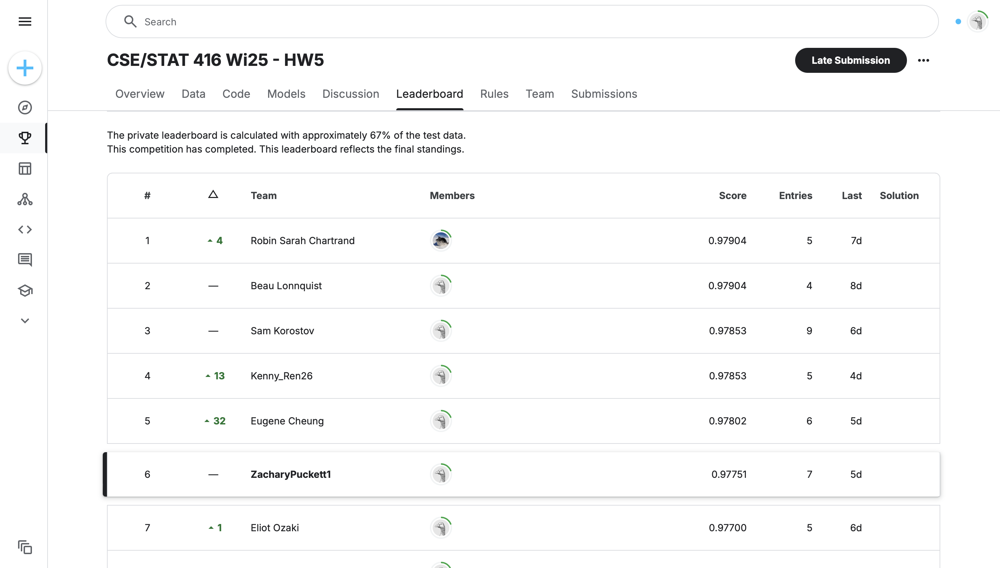

CSE 416 Kaggle Competition: Who Can Build the Strongest Classifier?
Project Overview
This project involved developing a machine learning model to predict whether students would earn a course certificate based on their engagement data from Harvard and MIT’s edX platform. Participants trained and evaluated models using a provided dataset containing student activity variables, then submitted predictions to a Kaggle-hosted leaderboard. Models were built and optimized in a platform of their choice, simulating real-world model deployment scenarios.
Model Workflow
You will see two models below. The first is a basic decision tree classifier which I created to gauge the level of complexity required to predict on this dataset. In an effort to improve my training accuracy, I advanced to a random forest classifier. This model yielded a signficantly higher training accuracy, and was therefore chosen to be used on the test data. I optimized performance by fine-tuning hyperparameters with GridSearchCV. This enabled my model to reach 97.75% prediction accuracy on the test data.
My approach placed 6th out of 125 competitors in the class, highlighting both the model’s effectiveness and my ability to optimize machine learning workflows. This project reinforced my skills in data-driven model selection, performance evaluation, and iterative refinement to enhance predictive accuracy.
Preview the Project
Project Results
View my leaderboard standing below, along with the test accuracy for my random forest classifier:
View & Run the Code in Google Colab
Click the button below to open this notebook in Google Colab and interact with the code: